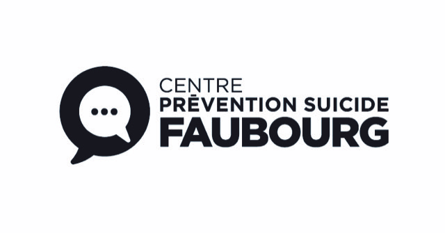

Le Faubourg est, depuis 1993, un organisme communautaire qui est spécialisé dans la prévention du suicide et de ses impacts. Le territoire desservi regroupe l’ensemble des Laurentides de Blainville jusqu’à Mont-Laurier.
La plupart de leurs interventions sont initiées suite aux demandes d’aide de personnes suicidaires qui nécessitent une aide immédiate. Les intervenants du Faubourg sont en mesure d’intervenir rapidement grâce à leur ligne téléphonique accessible 24/7.
L’organisme peut également aider les proches d’une personne suicidaire, pouvant ainsi leur donner des outils afin d’éviter une tragédie. Les personnes endeuillées à la suite d’un suicide dans leur entourage peuvent également obtenir des services avec les intervenants du Faubourg.
En 2025, le Faubourg a répondu à plus de 7 000 appels provenant du territoire des Laurentides. Malgré ce nombre important, l’organisme estime avoir manqué environ 5 % des appels en raison du nombre limité d’intervenants.
Besoin d’aide? Appelez le Faubourg
Ligne de réponse 24/24